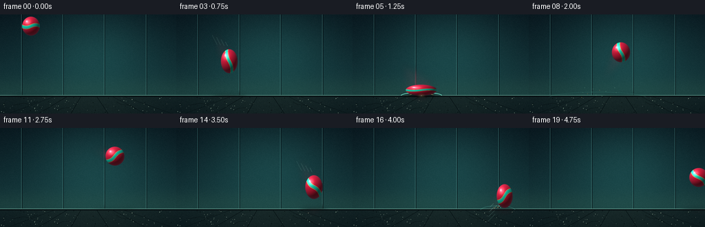
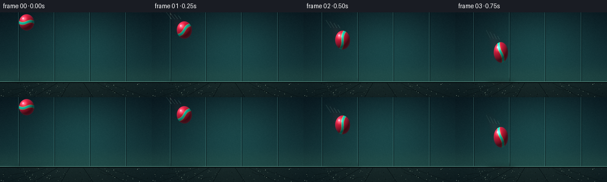

CODING AGENTS AS PIXEL WORLD MODELS
traex/GPT-5.6-Sol · phygen_026
点击播放 · 原生 RGB 像素
此结果可播放，但该运行尚未通过最终提交审核。页面展示不代表评测通过。
逐轮保存的候选
回放视频、检查图与代码变化。
每份候选均可单独播放。实际图片检查记录在下方工具轨迹中。
候选 01播放与检查图
点击播放 · 原生 RGB 像素


展开代码变化
--- 上一保存版本
+++ 本次保存版本
@@ -0,0 +1,233 @@
+from pathlib import Path
+import json
+import numpy as np
+from PIL import Image, ImageDraw, ImageFilter
+import artifact_io
+
+# Procedural text-to-video scene. Draw at 4x resolution for smooth, clean edges.
+ROOT = Path(__file__).resolve().parent
+SPEC = json.loads((ROOT / 'task_spec.json').read_text())
+W, H, N = SPEC['width'], SPEC['height'], SPEC['frames']
+S = 4
+WW, HH = W*S, H*S
+rng = np.random.default_rng(2601)
+
+
+def sc(v): return int(round(v*S))
+def box(x0,y0,x1,y1): return tuple(sc(v) for v in (x0,y0,x1,y1))
+
+
+def make_background():
+ y, x = np.mgrid[0:HH, 0:WW]
+ xf, yf = x/S, y/S
+ horizon = 118.0
+ # Moody teal studio wall with a soft pool of light around the action.
+ top = np.array([8., 22., 29.]); bot = np.array([20., 55., 59.])
+ t = np.clip(yf/horizon, 0, 1)[...,None]
+ arr = top*(1-t) + bot*t
+ spot = np.exp(-(((xf-139)/92)**2 + ((yf-50)/71)**2))
+ arr += spot[...,None] * np.array([12., 31., 28.])
+ # faint warm bounce from the ground
+ arr += np.exp(-((yf-112)/19)**2)[...,None] * np.array([7., 7., 2.])
+ # floor plane
+ fm = yf >= horizon
+ ft = np.clip((yf-horizon)/(H-horizon),0,1)
+ floor = np.zeros_like(arr)
+ floor[:] = np.array([15.,31.,34.])
+ floor += ft[...,None]*np.array([-5.,-7.,-6.])
+ floor += np.exp(-((xf-135)/108)**2)[...,None]*np.array([9.,10.,7.])
+ arr[fm] = floor[fm]
+ # subtle film grain fixed in world space
+ grain_small = rng.normal(0, 1.2, (H,W))
+ grain = np.repeat(np.repeat(grain_small,S,0),S,1)
+ arr += grain[...,None]
+ arr = np.clip(arr,0,255).astype(np.uint8)
+ im = Image.fromarray(arr,'RGB').convert('RGBA')
+ d = ImageDraw.Draw(im,'RGBA')
+ # wall panel seams and grounding line
+ for px in (31, 91, 151, 212):
+ d.line((sc(px),0,sc(px),sc(117.5)), fill=(110,185,177,10), width=sc(.35))
+ d.line((sc(px+1),0,sc(px+1),sc(117.5)), fill=(0,5,9,20), width=sc(.5))
+ d.line((0,sc(117.2),WW,sc(117.2)), fill=(125,190,170,46), width=sc(.55))
+ d.line((0,sc(119),WW,sc(119)), fill=(1,7,10,90), width=sc(1.0))
+ # perspective floor grooves and little aggregate flecks
+ for xx in (12,56,103,157,210,249):
+ endx = 128 + (xx-128)*0.42
+ d.line((sc(xx),HH,sc(endx),sc(119)), fill=(2,12,15,54), width=sc(.45))
+ for _ in range(115):
+ px=float(rng.uniform(1,255)); py=float(rng.uniform(120,143))
+ r=float(rng.uniform(.12,.42)); a=int(rng.integers(14,43))
+ col=(130,150,132,a) if rng.random()>.47 else (0,5,7,a)
+ d.ellipse(box(px-r,py-r,px+r,py+r),fill=col)
+ # restrained cracks make the surface readable as solid ground
+ for pts in [((17,132),(33,129),(44,130),(55,126)),
+ ((198,137),(188,132),(176,131),(169,127)),
+ ((82,140),(91,136),(102,135))]:
+ d.line([(sc(a),sc(b)) for a,b in pts], fill=(2,10,12,65), width=sc(.45))
+ return im
+
+BACKGROUND = make_background()
+
+# Hand-staged ballistic trajectory at 4 fps. Impacts occur at frame 5 and frame 15.
+CX = np.array([45,55,66,77,88,100,112,123,134,145,156,167,178,189,200,211,221,230,239,247],float)
+CY = np.array([17,30,47,68,92,110,97,73,55,43,38,41,50,65,86,109,99,83,74,72],float)
+RX = np.array([13,13,12.8,12.3,12.0,23,11.3,12.2,13.5,14,14,14,14,13.7,12.8,20,11.8,12.8,13.7,14],float)
+RY = np.array([14,15,16.2,17.7,19.0,8,19.0,17.0,14.7,14,14,14,14.2,15.2,17.5,8.7,17.5,15.5,14.3,14],float)
+
+
+def layer(size=(WW,HH)):
+ return Image.new('RGBA',size,(0,0,0,0))
+
+
+def draw_shadow(im, i):
+ gap=max(0.,118-(CY[i]+RY[i]))
+ contact = i in (5,15)
+ width=(30 if contact else 15 + min(gap,50)*.30)
+ height=3.0 if contact else 2.1 + min(gap,45)*.035
+ alpha=int(120 if contact else max(20,82-gap*1.0))
+ sh=layer(); sd=ImageDraw.Draw(sh,'RGBA')
+ sd.ellipse(box(CX[i]-width,117.3-height/2,CX[i]+width,117.3+height/2),fill=(0,2,4,alpha))
+ sh=sh.filter(ImageFilter.GaussianBlur(sc(2.2 if contact else 3.0)))
+ im.alpha_composite(sh)
+ # Soft colored reflection directly beneath the vibrant ball.
+ if gap < 35:
+ rf=layer(); rd=ImageDraw.Draw(rf,'RGBA')
+ rd.ellipse(box(CX[i]-12,119,CX[i]+12,123.5),fill=(255,47,76,int(max(0,34-gap*.7))))
+ rf=rf.filter(ImageFilter.GaussianBlur(sc(4)))
+ im.alpha_composite(rf)
+
+
+def draw_speed_cues(im,i):
+ if i == 0: return
+ vx=CX[i]-CX[i-1]; vy=CY[i]-CY[i-1]
+ speed=(vx*vx+vy*vy)**.5
+ if speed < 10: return
+ # Broad translucent velocity smear, kept behind the actual ball.
+ blur=layer(); bd=ImageDraw.Draw(blur,'RGBA')
+ ux,uy=vx/speed,vy/speed
+ for k,a in ((.35,30),(.72,16),(1.05,8)):
+ px=CX[i]-vx*k; py=CY[i]-vy*k
+ rr=max(6, RX[i]*(.92-k*.20))
+ bd.ellipse(box(px-rr,py-rr*.72,px+rr,py+rr*.72),fill=(255,47,79,a))
+ bd.line((sc(CX[i]-ux*8),sc(CY[i]-uy*8),sc(CX[i]-ux*(speed+22)),sc(CY[i]-uy*(speed+22))),
+ fill=(255,99,102,30),width=sc(5))
+ blur=blur.filter(ImageFilter.GaussianBlur(sc(5.2)))
+ im.alpha_composite(blur)
+ # Fine speed marks sell the force of the throw without clutter.
+ marks=layer(); md=ImageDraw.Draw(marks,'RGBA')
+ if i <= 4 or i in (6,7,14,16):
+ perp=(-uy,ux)
+ for j in range(4):
+ off=(j-1.5)*4.2
+ length=7+j*2.8
+ ex=CX[i]-ux*(RX[i]+5+j*3)+perp[0]*off
+ ey=CY[i]-uy*(RY[i]+4+j*3)+perp[1]*off
+ sx=ex-ux*length; sy=ey-uy*length
+ md.line((sc(sx),sc(sy),sc(ex),sc(ey)),fill=(176,242,219,44-j*5),width=sc(.65))
+ im.alpha_composite(marks)
+
+
+def draw_impact(im,i,impact,major=True):
+ age=i-impact
+ if age < 0 or age > 3: return
+ cx=CX[impact]
+ fx=layer(); d=ImageDraw.Draw(fx,'RGBA')
+ power=1.0 if major else .65
+ if age == 0:
+ # Horizontal pressure ring hugs the ground at the exact contact frame.
+ d.arc(box(cx-30*power,112.8,cx+30*power,123.0),183,357,
+ fill=(129,255,225,190 if major else 125),width=sc(1.15))
+ d.arc(box(cx-18*power,114.5,cx+18*power,121.3),185,355,
+ fill=(255,188,92,150),width=sc(.7))
+ d.ellipse(box(cx-19*power,116.1,cx+19*power,120.2),fill=(1,7,8,100))
+ else:
+ spread=(23+age*16)*power
+ d.arc(box(cx-spread,113-age*.15,cx+spread,124+age*2),185,355,
+ fill=(103,235,208,max(0,85-age*21)),width=sc(.75))
+ # Deterministic chips/dust launched upward and outward from contact.
+ count=12 if major else 7
+ for j in range(count):
+ ang=(-2.85 + j*(2.56/max(1,count-1))) # radians, fan mostly upward
+ # Explicit launch fan: x can be both sides, y always initially upward.
+ frac=j/max(1,count-1)
+ vx=(-18 + 36*frac)*power*(.74+((j*37)%7)/20)
+ vy=-(7 + (j*13)%9)*power
+ tt=age*.58
+ px=cx+vx*tt; py=117.2+vy*tt+5.1*tt*tt
+ rr=max(.28,(1.05-age*.18)*power)
+ col=(159,226,193,max(0,155-age*35)) if j%3 else (255,172,79,max(0,165-age*38))
+ d.ellipse(box(px-rr,py-rr,px+rr,py+rr),fill=col)
+ im.alpha_composite(fx)
+
+
+def render_ball(cx,cy,rx,ry,frame):
+ # Render an analytically shaded ellipsoid in its own tight supersampled tile.
+ pad=3.0
+ x0=int(np.floor((cx-rx-pad)*S)); x1=int(np.ceil((cx+rx+pad)*S))
+ y0=int(np.floor((cy-ry-pad)*S)); y1=int(np.ceil((cy+ry+pad)*S))
+ xs=(np.arange(x0,x1)+.5)/S; ys=(np.arange(y0,y1)+.5)/S
+ X,Y=np.meshgrid(xs,ys)
+ u=(X-cx)/rx; v=(Y-cy)/ry
+ q=u*u+v*v
+ # Narrow antialiased edge in supersampled space.
+ alpha=np.clip((1.018-q)*S*2.8,0,1)
+ z=np.sqrt(np.clip(1-q,0,1))
+ # Sphere lighting: strong upper-left key, teal rim, deep rubber edge.
+ nx,ny,nz=u,v,z
+ L=np.array([-.48,-.66,.58]); L=L/np.linalg.norm(L)
+ lam=np.clip(nx*L[0]+ny*L[1]+nz*L[2],0,1)
+ rim=np.clip(1-z,0,1)**1.6
+ base=np.zeros((*q.shape,3),float)
+ base[:]=[226,27,62] # vivid warm red rubber
+ # Painted turquoise wave band rotates noticeably as the ball travels.
+ spin=frame*.62
+ cs,sn=np.cos(spin),np.sin(spin)
+ ur=u*cs-v*sn; vr=u*sn+v*cs
+ band=np.abs(vr + .13*np.sin(3.0*ur)) < .145
+ base[band]=[24,226,194]
+ # Fine cream pinstripe bordering the broad colored band.
+ pin=(np.abs(np.abs(vr + .13*np.sin(3.0*ur))-.17)<.018)
+ base[pin]=[255,214,94]
+ shade=.28+.75*lam
+ rgb=base*shade[...,None]
+ rgb += rim[...,None]*np.array([5,28,31])
+ # Soft glossy rubber highlight, plus a sharp catchlight.
+ hx=(u+.38); hy=(v+.43)
+ gloss=np.exp(-(hx*hx/.105+hy*hy/.075))*115
+ rgb += gloss[...,None]*np.array([1.0,.84,.76])
+ catch=np.exp(-((u+.47)**2+(v+.49)**2)/.012)*110
+ rgb += catch[...,None]
+ # subtle molded-rubber stipple fixed in local coordinates
+ stip=2.2*np.sin(ur*39+vr*17)*np.sin(vr*45-ur*13)
+ rgb += stip[...,None]*z[...,None]
+ rgba=np.dstack((np.clip(rgb,0,255),alpha*255)).astype(np.uint8)
+ return Image.fromarray(rgba,'RGBA'),(x0,y0)
+
+
+def draw_contact_glint(im,i):
+ if i not in (5,15): return
+ gl=layer(); gd=ImageDraw.Draw(gl,'RGBA')
+ cx=CX[i]; p=1 if i==5 else .7
+ gd.ellipse(box(cx-6*p,115.7,cx+6*p,119.5),fill=(255,220,130,95))
+ gl=gl.filter(ImageFilter.GaussianBlur(sc(2.0)))
+ im.alpha_composite(gl)
+
+
+def frame_image(i):
+ im=BACKGROUND.copy()
+ draw_shadow(im,i)
+ draw_speed_cues(im,i)
+ # particles behind and around the ball; first impact is intentionally stronger
+ draw_impact(im,i,5,True)
+ draw_impact(im,i,15,False)
+ tile,pos=render_ball(CX[i],CY[i],RX[i],RY[i],i)
+ im.alpha_composite(tile,pos)
+ draw_contact_glint(im,i)
+ # Tiny foreground dust motes add depth but remain static and unobtrusive.
+ return np.asarray(im.convert('RGB').resize((W,H),Image.Resampling.LANCZOS),dtype=np.uint8)
+
+
+frames=np.stack([frame_image(i) for i in range(N)],axis=0)
+assert frames.shape==(N,H,W,3) and frames.dtype==np.uint8
+artifact_io.save(frames,ROOT)
+print(f'Saved {N} RGB frames: {frames.shape}, {SPEC["fps"]} fps')
候选 02播放与检查图
点击播放 · 原生 RGB 像素
展开代码变化
--- 上一保存版本
+++ 本次保存版本
@@ -42,7 +42,7 @@
grain = np.repeat(np.repeat(grain_small,S,0),S,1)
arr += grain[...,None]
arr = np.clip(arr,0,255).astype(np.uint8)
- im = Image.fromarray(arr,'RGB').convert('RGBA')
+ im = Image.fromarray(arr).convert('RGBA')
d = ImageDraw.Draw(im,'RGBA')
# wall panel seams and grounding line
for px in (31, 91, 151, 212):
@@ -69,7 +69,7 @@
BACKGROUND = make_background()
# Hand-staged ballistic trajectory at 4 fps. Impacts occur at frame 5 and frame 15.
-CX = np.array([45,55,66,77,88,100,112,123,134,145,156,167,178,189,200,211,221,230,239,247],float)
+CX = np.array([45,55,66,77,88,100,112,123,134,145,156,167,178,189,200,211,221,229,236,241],float)
CY = np.array([17,30,47,68,92,110,97,73,55,43,38,41,50,65,86,109,99,83,74,72],float)
RX = np.array([13,13,12.8,12.3,12.0,23,11.3,12.2,13.5,14,14,14,14,13.7,12.8,20,11.8,12.8,13.7,14],float)
RY = np.array([14,15,16.2,17.7,19.0,8,19.0,17.0,14.7,14,14,14,14.2,15.2,17.5,8.7,17.5,15.5,14.3,14],float)
@@ -201,7 +201,7 @@
stip=2.2*np.sin(ur*39+vr*17)*np.sin(vr*45-ur*13)
rgb += stip[...,None]*z[...,None]
rgba=np.dstack((np.clip(rgb,0,255),alpha*255)).astype(np.uint8)
- return Image.fromarray(rgba,'RGBA'),(x0,y0)
+ return Image.fromarray(rgba),(x0,y0)
def draw_contact_glint(im,i):
候选 03播放与检查图
可观测工具轨迹
实际执行的命令与返回图片。
命令 1exit 0
/bin/bash -lc "cat prompt.txt && printf '\\n--- GENERATION_RULES.md ---\\n' && cat GENERATION_RULES.md"
命令 2exit 0
/bin/bash -lc "cat task_spec.json && printf '\\n--- files ---\\n' && find . -maxdepth 2 -type f -printf '%p\\n' | sort"
命令 3exit 0
/bin/bash -lc "command -v ffmpeg || true; command -v blender || true; command -v python3 || true; python3 - <<'PY' mods=['PIL','numpy','cv2','imageio'] for m in mods: try: x=__import__(m); print(m,'OK',getattr(x,'__version__','')) except Exception as e: print(m,'NO',e) PY"
命令 4exit 0
/bin/bash -lc 'cat artifact_io.py'
命令 5exit 0
/bin/bash -lc "cat > generate.py <<'PY'
from pathlib import Path
import json
import numpy as np
from PIL import Image, ImageDraw, ImageFilter
import artifact_io
# Procedural text-to-video scene. Draw at 4x resolution for smooth, clean edges.
ROOT = Path(__file__).resolve().parent
SPEC = json.loads((ROOT / 'task_spec.json').read_text())
W, H, N = SPEC['width'], SPEC['height'], SPEC['frames']
S = 4
WW, HH = W*S, H*S
rng = np.random.default_rng(2601)
def sc(v): return int(round(v*S))
def box(x0,y0,x1,y1): return tuple(sc(v) for v in (x0,y0,x1,y1))
def make_background():
y, x = np.mgrid[0:HH, 0:WW]
xf, yf = x/S, y/S
horizon = 118.0
# Moody teal studio wall with a soft pool of light around the action.
top = np.array([8., 22., 29.]); bot = np.array([20., 55., 59.])
t = np.clip(yf/horizon, 0, 1)[...,None]
arr = top*(1-t) + bot*t
spot = np.exp(-(((xf-139)/92)**2 + ((yf-50)/71)**2))
arr += spot[...,None] * np.array([12., 31., 28.])
# faint warm bounce from the ground
arr += np.exp(-((yf-112)/19)**2)[...,None] * np.array([7., 7., 2.])
# floor plane
fm = yf >= horizon
ft = np.clip((yf-horizon)/(H-horizon),0,1)
floor = np.zeros_like(arr)
floor[:] = np.array([15.,31.,34.])
floor += ft[...,None]*np.array([-5.,-7.,-6.])
floor += np.exp(-((xf-135)/108)**2)[...,None]*np.array([9.,10.,7.])
arr[fm] = floor[fm]
# subtle film grain fixed in world space
grain_small = rng.normal(0, 1.2, (H,W))
grain = np.repeat(np.repeat(grain_small,S,0),S,1)
arr += grain[...,None]
arr = np.clip(arr,0,255).astype(np.uint8)
im = Image.fromarray(arr,'RGB').convert('RGBA')
d = ImageDraw.Draw(im,'RGBA')
# wall panel seams and grounding line
for px in (31, 91, 151, 212):
d.line((sc(px),0,sc(px),sc(117.5)), fill=(110,185,177,10), width=sc(.35))
d.line((sc(px+1),0,sc(px+1),sc(117.5)), fill=(0,5,9,20), width=sc(.5))
d.line((0,sc(117.2),WW,sc(117.2)), fill=(125,190,170,46), width=sc(.55))
d.line((0,sc(119),WW,sc(119)), fill=(1,7,10,90), width=sc(1.0))
# perspective floor grooves and little aggregate flecks
for xx in (12,56,103,157,210,249):
endx = 128 + (xx-128)*0.42
d.line((sc(xx),HH,sc(endx),sc(119)), fill=(2,12,15,54), width=sc(.45))
for _ in range(115):
px=float(rng.uniform(1,255)); py=float(rng.uniform(120,143))
r=float(rng.uniform(.12,.42)); a=int(rng.integers(14,43))
col=(130,150,132,a) if rng.random()>.47 else (0,5,7,a)
d.ellipse(box(px-r,py-r,px+r,py+r),fill=col)
# restrained cracks make the surface readable as solid ground
for pts in [((17,132),(33,129),(44,130),(55,126)),
((198,137),(188,132),(176,131),(169,127)),
((82,140),(91,136),(102,135))]:
d.line([(sc(a),sc(b)) for a,b in pts], fill=(2,10,12,65), width=sc(.45))
return im
BACKGROUND = make_background()
# Hand-staged ballistic trajectory at 4 fps. Impacts occur at frame 5 and frame 15.
CX = np.array([45,55,66,77,88,100,112,123,134,145,156,167,178,189,200,211,221,230,239,247],float)
CY = np.array([17,30,47,68,92,110,97,73,55,43,38,41,50,65,86,109,99,83,74,72],float)
RX = np.array([13,13,12.8,12.3,12.0,23,11.3,12.2,13.5,14,14,14,14,13.7,12.8,20,11.8,12.8,13.7,14],float)
RY = np.array([14,15,16.2,17.7,19.0,8,19.0,17.0,14.7,14,14,14,14.2,15.2,17.5,8.7,17.5,15.5,14.3,14],float)
def layer(size=(WW,HH)):
return Image.new('RGBA',size,(0,0,0,0))
def draw_shadow(im, i):
gap=max(0.,118-(CY[i]+RY[i]))
contact = i in (5,15)
width=(30 if contact else 15 + min(gap,50)*.30)
height=3.0 if contact else 2.1 + min(gap,45)*.035
alpha=int(120 if contact else max(20,82-gap*1.0))
sh=layer(); sd=ImageDraw.Draw(sh,'RGBA')
sd.ellipse(box(CX[i]-width,117.3-height/2,CX[i]+width,117.3+height/2),fill=(0,2,4,alpha))
sh=sh.filter(ImageFilter.GaussianBlur(sc(2.2 if contact else 3.0)))
im.alpha_composite(sh)
# Soft colored reflection directly beneath the vibrant ball.
if gap < 35:
rf=layer(); rd=ImageDraw.Draw(rf,'RGBA')
rd.ellipse(box(CX[i]-12,119,CX[i]+12,123.5),fill=(255,47,76,int(max(0,34-gap*.7))))
rf=rf.filter(ImageFilter.GaussianBlur(sc(4)))
im.alpha_composite(rf)
def draw_speed_cues(im,i):
if i == 0: return
vx=CX[i]-CX[i-1]; vy=CY[i]-CY[i-1]
speed=(vx*vx+vy*vy)**.5
if speed < 10: return
# Broad translucent velocity smear, kept behind the actual ball.
blur=layer(); bd=ImageDraw.Draw(blur,'RGBA')
ux,uy=vx/speed,vy/speed
for k,a in ((.35,30),(.72,16),(1.05,8)):
px=CX[i]-vx*k; py=CY[i]-vy*k
rr=max(6, RX[i]*(.92-k*.20))
bd.ellipse(box(px-rr,py-rr*.72,px+rr,py+rr*.72),fill=(255,47,79,a))
bd.line((sc(CX[i]-ux*8),sc(CY[i]-uy*8),sc(CX[i]-ux*(speed+22)),sc(CY[i]-uy*(speed+22))),
fill=(255,99,102,30),width=sc(5))
blur=blur.filter(ImageFilter.GaussianBlur(sc(5.2)))
im.alpha_composite(blur)
# Fine speed marks sell the force of the throw without clutter.
marks=layer(); md=ImageDraw.Draw(marks,'RGBA')
if i <= 4 or i in (6,7,14,16):
perp=(-uy,ux)
for j in range(4):
off=(j-1.5)*4.2
length=7+j*2.8
ex=CX[i]-ux*(RX[i]+5+j*3)+perp[0]*off
ey=CY[i]-uy*(RY[i]+4+j*3)+perp[1]*off
sx=ex-ux*length; sy=ey-uy*length
md.line((sc(sx),sc(sy),sc(ex),sc(ey)),fill=(176,242,219,44-j*5),width=sc(.65))
im.alpha_composite(marks)
def draw_impact(im,i,impact,major=True):
age=i-impact
if age < 0 or age > 3: return
cx=CX[impact]
fx=layer(); d=ImageDraw.Draw(fx,'RGBA')
power=1.0 if major else .65
if age == 0:
# Horizontal pressure ring hugs the ground at the exact contact frame.
d.arc(box(cx-30*power,112.8,cx+30*power,123.0),183,357,
fill=(129,255,225,190 if major else 125),width=sc(1.15))
d.arc(box(cx-18*power,114.5,cx+18*power,121.3),185,355,
fill=(255,188,92,150),width=sc(.7))
d.ellipse(box(cx-19*power,116.1,cx+19*power,120.2),fill=(1,7,8,100))
else:
spread=(23+age*16)*power
d.arc(box(cx-spread,113-age*.15,cx+spread,124+age*2),185,355,
fill=(103,235,208,max(0,85-age*21)),width=sc(.75))
# Deterministic chips/dust launched upward and outward from contact.
count=12 if major else 7
for j in range(count):
ang=(-2.85 + j*(2.56/max(1,count-1))) # radians, fan mostly upward
# Explicit launch fan: x can be both sides, y always initially upward.
frac=j/max(1,count-1)
vx=(-18 + 36*frac)*power*(.74+((j*37)%7)/20)
vy=-(7 + (j*13)%9)*power
tt=age*.58
px=cx+vx*tt; py=117.2+vy*tt+5.1*tt*tt
rr=max(.28,(1.05-age*.18)*power)
col=(159,226,193,max(0,155-age*35)) if j%3 else (255,172,79,max(0,165-age*38))
d.ellipse(box(px-rr,py-rr,px+rr,py+rr),fill=col)
im.alpha_composite(fx)
def render_ball(cx,cy,rx,ry,frame):
# Render an analytically shaded ellipsoid in its own tight supersampled tile.
pad=3.0
x0=int(np.floor((cx-rx-pad)*S)); x1=int(np.ceil((cx+rx+pad)*S))
y0=int(np.floor((cy-ry-pad)*S)); y1=int(np.ceil((cy+ry+pad)*S))
xs=(np.arange(x0,x1)+.5)/S; ys=(np.arange(y0,y1)+.5)/S
X,Y=np.meshgrid(xs,ys)
u=(X-cx)/rx; v=(Y-cy)/ry
q=u*u+v*v
# Narrow antialiased edge in supersampled space.
alpha=np.clip((1.018-q)*S*2.8,0,1)
z=np.sqrt(np.clip(1-q,0,1))
# Sphere lighting: strong upper-left key, teal rim, deep rubber edge.
nx,ny,nz=u,v,z
L=np.array([-.48,-.66,.58]); L=L/np.linalg.norm(L)
lam=np.clip(nx*L[0]+ny*L[1]+nz*L[2],0,1)
rim=np.clip(1-z,0,1)**1.6
base=np.zeros((*q.shape,3),float)
base[:]=[226,27,62] # vivid warm red rubber
# Painted turquoise wave band rotates noticeably as the ball travels.
spin=frame*.62
cs,sn=np.cos(spin),np.sin(spin)
ur=u*cs-v*sn; vr=u*sn+v*cs
band=np.abs(vr + .13*np.sin(3.0*ur)) < .145
base[band]=[24,226,194]
# Fine cream pinstripe bordering the broad colored band.
pin=(np.abs(np.abs(vr + .13*np.sin(3.0*ur))-.17)<.018)
base[pin]=[255,214,94]
shade=.28+.75*lam
rgb=base*shade[...,None]
rgb += rim[...,None]*np.array([5,28,31])
# Soft glossy rubber highlight, plus a sharp catchlight.
hx=(u+.38); hy=(v+.43)
gloss=np.exp(-(hx*hx/.105+hy*hy/.075))*115
rgb += gloss[...,None]*np.array([1.0,.84,.76])
catch=np.exp(-((u+.47)**2+(v+.49)**2)/.012)*110
rgb += catch[...,None]
# subtle molded-rubber stipple fixed in local coordinates
stip=2.2*np.sin(ur*39+vr*17)*np.sin(vr*45-ur*13)
rgb += stip[...,None]*z[...,None]
rgba=np.dstack((np.clip(rgb,0,255),alpha*255)).astype(np.uint8)
return Image.fromarray(rgba,'RGBA'),(x0,y0)
def draw_contact_glint(im,i):
if i not in (5,15): return
gl=layer(); gd=ImageDraw.Draw(gl,'RGBA')
cx=CX[i]; p=1 if i==5 else .7
gd.ellipse(box(cx-6*p,115.7,cx+6*p,119.5),fill=(255,220,130,95))
gl=gl.filter(ImageFilter.GaussianBlur(sc(2.0)))
im.alpha_composite(gl)
def frame_image(i):
im=BACKGROUND.copy()
draw_shadow(im,i)
draw_speed_cues(im,i)
# particles behind and around the ball; first impact is intentionally stronger
draw_impact(im,i,5,True)
draw_impact(im,i,15,False)
tile,pos=render_ball(CX[i],CY[i],RX[i],RY[i],i)
im.alpha_composite(tile,pos)
draw_contact_glint(im,i)
# Tiny foreground dust motes add depth but remain static and unobtrusive.
return np.asarray(im.convert('RGB').resize((W,H),Image.Resampling.LANCZOS),dtype=np.uint8)
frames=np.stack([frame_image(i) for i in range(N)],axis=0)
assert frames.shape==(N,H,W,3) and frames.dtype==np.uint8
artifact_io.save(frames,ROOT)
print(f'Saved {N} RGB frames: {frames.shape}, {SPEC[\"fps\"]} fps')
PY
python3 generate.py"命令 6exit 0
/bin/bash -lc "find . -maxdepth 2 -type f -printf '%p %s bytes\\n' | sort"
命令 7exit 0
/bin/bash -lc "python3 -m py_compile generate.py && python3 - <<'PY'
import json, numpy as np
from pathlib import Path
from PIL import Image
p=Path('.')
s=json.loads((p/'task_spec.json').read_text())
imgs=[]
for i in range(s['frames']):
im=np.asarray(Image.open(p/'frames'/f'{i:02d}.png').convert('RGB'))
assert im.shape==(s['height'],s['width'],3) and im.dtype==np.uint8
imgs.append(im)
a=np.stack(imgs)
print('frames',a.shape,a.dtype,'range',int(a.min()),int(a.max()))
print('mean frame deltas',np.round(np.abs(np.diff(a.astype(float),axis=0)).mean((1,2,3)),2).tolist())
# vivid ball segmentation and extents per frame
mask=(a[...,0]>110)&(a[...,0]>a[...,1]*1.32)&(a[...,0]>a[...,2]*1.16)
for i,m in enumerate(mask):
y,x=np.where(m)
print(f'{i:02d}: vivid bbox x={x.min():3d}..{x.max():3d} y={y.min():3d}..{y.max():3d} area={len(x):4d}')
with np.load('pixels.npz') as z:
q=z['pixels']; print('packed tensor',q.shape,q.dtype)
assert q.shape==(s['height'],s['width'],s['frames'])
print('html bytes',Path('index.html').stat().st_size,'inspection',Image.open('inspection.png').size)
PY"命令 8exit 0
/bin/bash -lc 'before=$(sha256sum pixels.npz | cut -d'"' ' -f1); python3 generate.py >/tmp/generate_check.log 2>/tmp/generate_check.err; after="'$(sha256sum pixels.npz | cut -d'"' ' -f1); cat /tmp/generate_check.log; printf 'deterministic_pixels_hash_before=%s\\ndeterministic_pixels_hash_after=%s\\n' \""'$before" "$after"; test "$before" = "$after"'
命令 9exit 0
/bin/bash -lc 'set -e
python3 generate.py > .tmp_generate_check.log 2> .tmp_generate_check.err
h1=$(sha256sum pixels.npz | cut -d'"' ' -f1)
python3 generate.py > .tmp_generate_check2.log 2> .tmp_generate_check2.err
h2="'$(sha256sum pixels.npz | cut -d'"' ' -f1)
cat .tmp_generate_check.log
printf 'hash1=%s\\nhash2=%s\\n' \""'$h1" "$h2"
test "$h1" = "$h2"
python3 - <<'"'PY'
import json, numpy as np
from pathlib import Path
from PIL import Image
s=json.loads(Path('task_spec.json').read_text())
a=np.stack([np.asarray(Image.open(f'frames/{i:02d}.png').convert('RGB')) for i in range(s['frames'])])
assert a.shape==(20,144,256,3) and a.dtype==np.uint8
assert not Path('.tmp_generate_check.err').read_text() and not Path('.tmp_generate_check2.err').read_text()
mask=(a[...,0]>110)&(a[...,0]>a[...,1]*1.32)&(a[...,0]>a[...,2]*1.16)
print('validated',a.shape,a.dtype,'range',a.min(),a.max())
for i in (4,5,6,14,15,16,19):
y,x=np.where(mask[i]); print(i,'bbox',x.min(),y.min(),x.max(),y.max(),'area',len(x))
assert np.where(mask[19])[1].max()<255
with np.load('pixels.npz') as z: assert z['pixels'].shape==(144,256,20)
PY"命令 10exit 0
/bin/bash -lc "python3 - <<'PY'
from pathlib import Path
for name in ('.tmp_generate_check.log','.tmp_generate_check.err','.tmp_generate_check2.log','.tmp_generate_check2.err'):
p=Path(name)
if p.exists(): p.unlink()
print('Temporary validation logs cleaned; deliverables retained.')
PY
find . -maxdepth 1 -type f -printf '%f\\n' | sort"保存候选 3 份；完成命令 10 次；可验证图片返回 0 张。原始 API 响应与完整日志保留在本地。